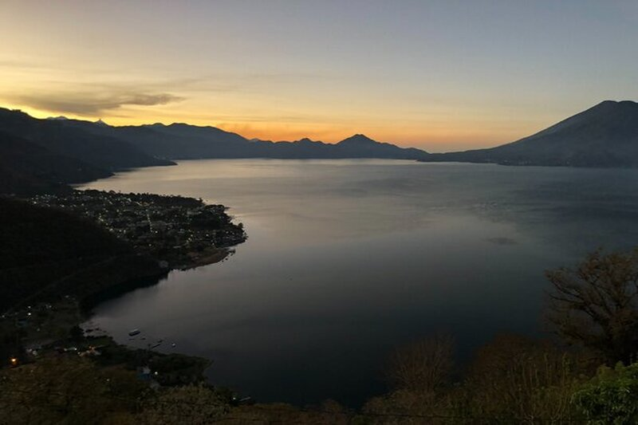
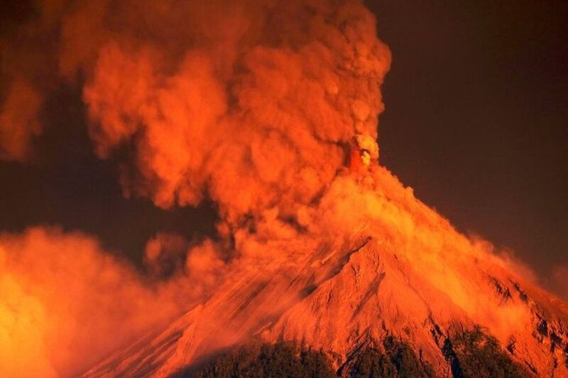
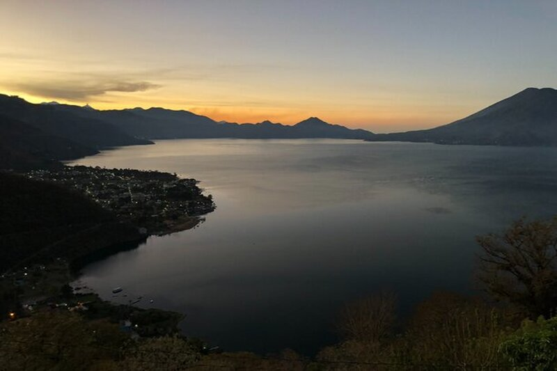
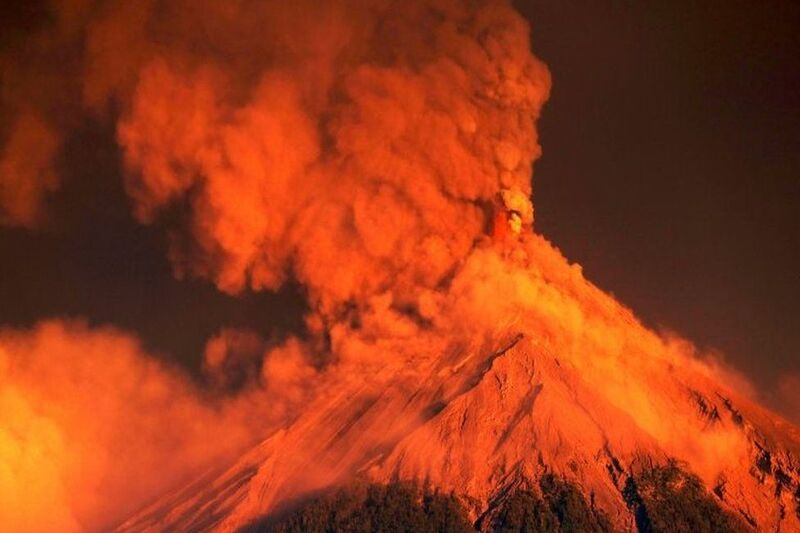

Prepare to be amazed as we unveil the hidden treasures and breathtaking landscapes that make this Central American gem truly remarkable. From the ancient Mayan ruins of Tikal, where towering pyramids rise above the dense jungle canopy, to the colonial charm of Antigua Guatemala with its cobblestone streets and colorful facades, Guatemala offers a captivating blend of history and culture. Immerse yourself in the natural splendor of Lake Atitlán, framed by majestic volcanoes and vibrant indigenous villages. Explore the mystical caves of Semuc Champey, where emerald pools cascade into crystal-clear waters. Discover the rich biodiversity of the lush rainforests and encounter fascinating wildlife along the banks of the Rio Dulce. With its diverse landscapes, vibrant traditions, and warm hospitality, Guatemala beckons adventurers and seekers of beauty from around the world. Join us on this virtual journey and let the wonders of Guatemala inspire your wanderlust.